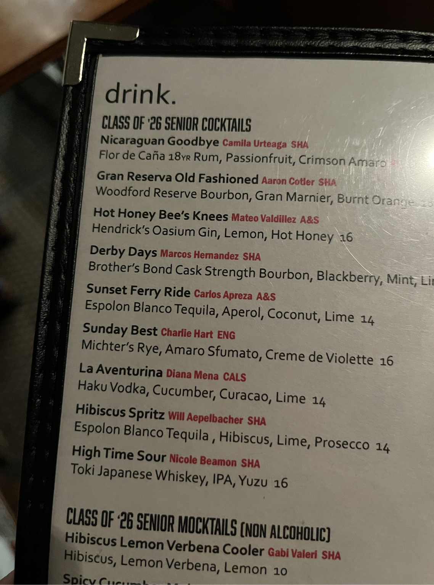

The Sunday Best
My Senior Cocktail at The Regent Lounge
The Regent Lounge

I worked at The Regent Lounge in the Statler Hotel throughout all four years of college. As part of the lounge’s annual senior cocktail tradition, I had the opportunity to create a drink for the menu: the Sunday Best.
The name comes from the many Sundays I spent working there. The drink itself came together from a mix of personal influences and things I picked up over time behind the bar. I started experimenting with Amaro Sfumato, partly inspired by the three semesters I spent studying Italian. I initially tried adding in Sazerac rye as a small nod to my love for the city of New Orleans where my sister studies. After a lot of tasting and adjusting, I ended up switching the rye to Michter’s for a smoother balance. Finally, I added Giffard Crème de Violette out of curiosity, and it actually gave the drink a distinct character. I refined the measurements through trial and error until I had a product I was proud of. My manager later brought in violets for the garnish, which tied everything together.
The Statler Hotel
Sunday Best reflects a quieter side of my college experience. I spent much of my time at Cornell working at the Statler Hotel, where I came to understand not just the rhythm of the lounge, but the broader system surrounding it. Through the relationships I built across departments, I gained exposure to front desk operations, meetings and events, fine dining service at Taverna Banfi, valet services, housekeeping, kitchen operation, and facility maintenance. Even though I worked in a single space, I developed an appreciation for how all of these pieces come together to create a cohesive experience.
It’s a small, personal project, but one that came out of four years of consistency and growth in a completely different environment from my engineering work.
Recipe: 1.5 oz Michter’s rye, 0.25 oz Amaro Sfumato, 0.25 oz Giffard Crème de Violette, and rhubarb bitters.